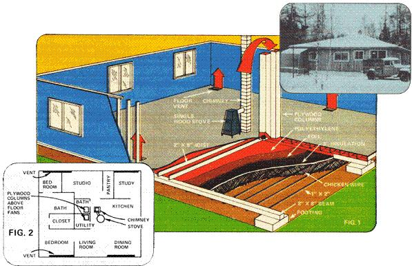

His neighbors told him it couldn't be done when Stefan Nadzo of Franklin, Maine decided to heat his family's 1,360-squarefoot home with just one wood-burning stove. He did it anyway,though,and did it with style. And his system works! Here, Stefan shares some of his secrets for getting the most out of wood heat.
When my wife and I recently settled in southeastern Maine, we were determined to do two things: [1] build and live in a large, comfortable house and [2] heat it with just a single wood-burning stove.
Our new neighbors-hardened Mainers from way back, all of whom had made it through many a difficult down-East winter-admired our idealism . . . but they minced no words when it came to telling us that our two objectives were mutually exclusive.
"You can't survive in a large house with only a woodburning stove for heat," they insisted. "Not through the kind of winters we have here, where temperatures sink to twenty below zero and the heavy winds rack up chill factors of minus seventy!" We might be able to do it with a one- or two-room cabin, we were told, but not with a 40' X 34' house.
Well, we went ahead and built our 1,360-square-foot home-complete with solitary wood-burner-just as we'd planned. And along about the middle of January, we invited some of our once-skeptical neighbors over to dinner. Toward the end of the evening (when the temperature inside the house had stayed a cozy 68° F, even though the mercury had fallen to a marrow-chilling -15° outside), everyone admitted-with due amazement-that, yes, we'd done what we'd set out to do: namely, marry the utility and convenience of a large house with the simplicity and economy of wood stove heating!
We attacked the problem of designing and building an energy-efficient (yet spacious) domicile from many different angles. Among the factors that we considered most carefully were: [1] How to shelter our structure from the wind.
[2] What building materials to use.
[3] The number of windows the house should have.
[4] How to achieve adequate air circulation inside the dwelling.
[5] What kind of stove to buy, and where to install it. I'll discuss each of these considerations-and their effect upon our home's cold-weather livability-one by one.
Because we'd been warned repeatedly about Maine's stiff winter gales, we wanted to build our home where it'd have as much protection from the wind as possible, yet we didn't want to put the building near a windbreak that might block out either our view or the sun's warming rays. Ultimately, we cleared a small site in the midst of an evergreen-and-hardwood forest and built our dwelling so that it would be surrounded on three sides-east, west, and north-by timber. (The only unprotected side, in other words, faces Ole Sol as he hangs low in the southern winter sky.)
While we don't have any data to prove that being nestled amongst the trees has helped us conserve heating energy, we can state that the air around our house is considerably warmer than the air on nearby fully cleared sites. And we've noticed that on particularly gusty days, the trees do neutralize the windchill factor on our site. So having a natural windbreak..certainly hasn't hurt us any!
Our home is a single-story structure that rests on a gravel base which extends to the depth of our region's frost line (three feet). We protect the dwelling's 16" of crawl space (see Fig. 1) from winter winds by wrapping the entire base of the house with polyethylene plastic sheeting, and then packing snow against the plastic after the first good storm of the season.
Four- to six-inch-thick cedar logs-planed on one side and rough on the other-serve as the structure's primary building material. These timbers not only provide a durable and attractive wall material, but (since cedar is a very porous wood) several inches of insulation too.
The hip roof-with four sloping sides that meet at a sixfoot ridgepole-is insulated with three-inch styrofoam boards nailed to one-inch sheathing. This arrangement probably doesn't prevent heat loss as well as would a conventional roof with three to six inches of rolled fiberglass . . . but it seems to work well enough, while allowing us to enjoy the aesthetic rewards of an open ceiling.
We decided to give the sun every possible opportunity to enter our house by installing as many windows (including three homemade skylights) as we could afford. In this way, our home is warmed-in part-by passive solar heat during the day. (At night, though, we have to cover all our windows-which, of course, are double-paned-with heavy, insulated curtains to keep the stored warmth from radiating back out into the cold darkness.)
On chilly, overcast days-when we don't want to draw the curtains but we DO want to keep heat from escaping through the windows-we pull down our "Rescue Blanket" shades. These are just some ordinary blinds that we jury-rigged from a thin, lightweight, metalized plastic sheeting-called "space blanket" material by some folks-of the type that's often carried in survival kits by skiers and backpackers. All we did was tape one edge of this sheeting (shiny side facing into the house) to the wall atop each window, and the other end to a long dowel so that the whole affair can be rolled up or down as necessary. These shades offer the twofold advantage of allowing some sunlight to enter the house while letting little-or no-heat escape. (Rescue Blankets are sold by L.L. Bean, Inc., Freeport, Maine 04033. At $2.00 postpaid for each 56" X 84" sheet, we think they're a pretty good buy.)
In order to allow air to circulate as freely as possible inside our house land thereby avoid having the "cold corners" so common to homes in this part of the country) we decided to limit the number of floor-to-ceiling walls in our dwelling and-where partitions seemed necessary for reasons of privacy-put up fence-like room dividers instead. Thus, our two baths and bedrooms, the study, the art studio, and the utility area are separated from each other and from the rest of the house by seven-foot-tall "fences" built of weathered pine boards, cedar slabs, and/or pegboards. (The kitchen, dining room, and living room share the same open area and are separated only by the placement of furniture and rugs.)
The space above each of the fenced-off rooms is completely unenclosed. (That is, we opted for open ceilings.) The only areas of the house that are covered with ceilings are the clothes closet (which we felt should be protected from settling dust) and the pantry (which is completely insulated from the rest of the house to maintain the steady, cool temperature in the room that is more ideal for the storage of food).
The heart of our air circulation system-and (we think) the single most important factor in the successful heating of the house-is the enclosed, insulated air space under our dwelling's floor through which we pass warm room air. (This is very similar in concept to the "ondol" floors used in Korea.)
When we were constructing the house, we nailed-to the underside of the structure's main support beams (Fig. 1)-a false floor consisting of one-inch lumber and chicken wire covered with three inches of commercial fiberglass insulation. Atop the insulation, we placed a single layer of aluminum foil (shiny side up) . . . and over that, a layer of polyethylene sheeting. The wooden floor we walk on, then, is 13" above the polyethylene (allowing 8" for the joists and 8" for the beams, and subtracting 3" for the insulation).
Warm air is drawn under our home's main floor and through the 13-inch-deep insulated air space beneath by a pair of inexpensive, kitchen-type exhaust fans set into the floorboards between two joists and on either side of the house's center-most support beam (Fig. 1). We then built an eight-foot-tall plywood column over each fan. This makes it possible for the blowers to draw warm air down from the building's open ceiling, through the columns, and under the floorboards . . . after which the air is vented back into the house via any of four 2" X 6' openings (Fig. 2) set into the corners of the structure's main floor. In this fashion, a continuous flow of warmth is created from the highest land warmest) parts of the house, down under the floor, and back up through the coolest parts (the corners) of the structure.
In addition to the two fans in the floor (which-except for a four-hour "rest period" each morning-run almost continuously throughout the winter), we've placed a 14-inch exhaust tan above the divider that separates the bedroom from the utility room. This blower is tilted slightly towards the floor, so that when it operates it pushes warm air down into the bedroom.
We've found that when the bedroom fan is running (which is to say, just on the chilliest days) not only is the bedroom's temperature increased . . . the whole house becomes cozier too. This is further proof-we think-that it pays to keep warm air moving.
Each of our three fans, by the way, has a three-way switch . . . and so far, we've never had to run a given blower on any but the lowest (and quietest) setting.
The hero of this story, of course, is our wood stove . . . which happens to be a Norwegian Jøtul Combi-fire 4. (At $500-plus, the No. 4 Jøtul isn't the least expensive woodburner we could've bought, but it's the one we found best suited to our purpose.)
According to the manufacturer's literature, the Combi-fire 4 is designed to heat 8,825 cubic feet of air. Our house-with about 12,700 cubic feet of interior space-considerably exceeds that recommended volume. Still, the stove (aided by our fans and the false floor I've described) has proven equal to the task.
We located the Jøtul right in the center of the house. It's next to a simple chimney built of 8" flue tiles surrounded by mortared C-shaped concrete chimney blocks, and only a few feet away from the pair of plywood columns that conceal our floor-mounted exhaust fans. Thus, the two fans are able to draw into the floor the warm air (warmest in the house) that collects directly over the stove.
We keep the wood-burner's fire going all the time during the winter, although on clear days the sun-shining as it does through a number of windows and skylights-provides our home with a great deal of warmth. (This allows us to let the fire burn down somewhat from time to time so we can clean out some of the ashes that've accumulated in the stove.)
At night-before going to bed-we pack the Jøtul with as much wood as we can get in and close the front vent (and the back flue) almost all the way, so there's just enough draft to keep the fire alive. This way, the house temperature automatically drops to about 50° overnight. Then, in the morning when we reopen the vent, the fire quickly flares up again and raises the building's temperature to somewhere between 65° and 70°.
Quite by accident, we discovered that if we kept a pan of water on the stove, we increased the unit's apparent heating capacity. The reason for this (we later learned while reading the centerfold in MOTHER NO. 36) is that moist air holds heat better than dry air, and-of course-by heating our tea w ater on the J ø tul we were simply humidifying the atmosphere.
DRAWBACKS TO WOOD HEAT
To be sure, there are disadvantages (however slight) to heating with wood.
For instance, when you first buy and install a stove like ours you have to learn to build a fire properly, so the blaze will produce the maximum amount of heat. This is something that comes only with experience, and with a knowledge of one's stove and its capabilities.
Also, there's the effort required to keep a fire going. Someone has to check the stove every six to eight hours to see that it has sufficient fuel, for if the blaze is allowed to burn out (and the house to chill) in really frigid weather, it can take as long as four hours to bring the building back to a comfortable temperature once the flame has been rekindled. And if the house is left unattended for any length of time, the water pipes can freeze (unless the plumbing is designed so that you can drain the system prior to going on a trip).
Still another inconvenience is the work involved in chopping firewood. We expect to use about six cords of seasoned hardwood each winter . . . or roughly ten tons of timber. That's a lot of wood to cut by hand! (Of course, you can buy firewood relatively inexpensively . . . but it costs nothing to cut it yourself, and-healthwise-it's certainly a better deal to hand-hew the fuel.) I should mention that our Jøtul-because of its high efficiency-really helps out in this department. We have friends who own Brand X stoves that consume twice as much wood as ours while generating less total heat! So if it weren't for our Jøtul, I might be cutting more fuel than I presently do.
The disadvantages of our wood stove/false floor/no wall setup are-we think-far outweighed by the system's advantages.
Chief among the points in favor of our heating system are simplicity, economy, and reliability . . . especially the latter. Once installed, no part of the setup can break down. Even if the fans should malfunction (or if-as is more likely-they should stop due to a power blackout), the stove will still put out enough therms to keep us reasonably warm. And since we're not dependent on maintenance men or fuel oil deliveries, we needn't fear an interruption of service due to foul-ups in those departments. (Nor do we worry about the ever-rising cost of labor and petroleum.)
In short, we submit our experience as proof that a relatively large and comfortable house can be simply and inexpensively heated (even in Maine!) with a single wood-burning stove.
|
 |
|
|